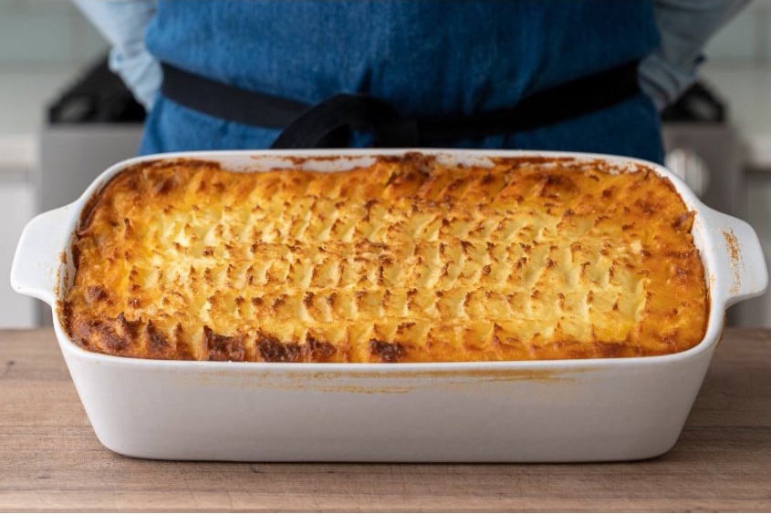

Shepherd's Pie

Description
This is a delicious recipe that takes some time to make, but easily feeds
a family and makes delicious leftovers.
Ingredients
- 2.5 lbs peeled russet potatoes
- 2 medium onions, chopped
- 2-3 large carrots, medium diced
- 3-4 ribs celery, medium diced
- 1/2 bulb fennel, medium diced
- 4-5 cloves garlic, minced
- 3 Tbsp olive oil
- 3 lbs. ground beef
- 1 cup dry red wine
- 3 1/2 Tbsp tomato paste
- 2 3/4 Tbsp Beef Better Than Bouillon
- 1 tsp black pepper
- 2 tsp thyme, chopped
- 3 1/2 Tbsp AP Flour
- 1 3/4 cup beef stock
- 1/4 cup parsley, chopped
- 3/4 cup heavy cream
- 1/2 cup sour cream
- 1 cup grated parmesan
- 3 egg yolks
Steps
- Add potatoes to a stock pot, cover with water and bring to a boil. Once boiling, reduce heat to medium low and cover. Cook for 30-40min or until a knife or cake tester doesn’t meet resistance when inserted.
- Drain and pass through a potato ricer. Stir in melted butter, cream, sour cream, parm, and two very large pinches of salt. Taste for seasoning. Add more salt if needed. Stir in egg yolks.
- Toss all cut veggies together in a bowl.
- Heat a large heavy bottomed pot over high. When hot, add olive oil and ground lamb and break apart while cooking. It should take about 5 minutes for the water to cook off then 5-10 more minutes to brown meat.
- When meat has begun to take on color and brown fond is forming in the bottom of the pot, add veggies and 1Tbsp 15g of salt. Stir to combine and cook for 3-4 more min until veg has begun to soften.
- Add wine to deglaze pot, scraping up fond on the bottom. Stir in tomato paste, bouillon, worcestershire, and black pepper.
- Once wine is mostly reduced, stir in thyme and flour. Cook until bottom of the pot glazes up with fond again, then add stock. Bring to a simmer then cover and lower heat to medium low to simmer until sauce is reduced by half and veggies are tender, about 10 min.
- Taste for seasoning and adjust with salt if needed.
- Off heat, stir in parsley.
- Scoop filling into a 9”x13” (23cm x 33cm) baking dish. Press into dish and smooth to create an even layer.
- Spoon mashed potato mixture over the top and spread into even layer. Use a spoon or knife to create a rough texture on top of the potatoes. You’re creating texture that will brown and get crisp here. Feel free to be creative.
- Top with parmesan cheese.
- Place baking dish on a sheet tray and bake in a preheated 425F/220C oven for 25min.
- After 25 min, move dish under a high broiler for a minute or so until top is golden and crusty - keep an eye during broiling because potatoes can burn quickly.
Back to main page